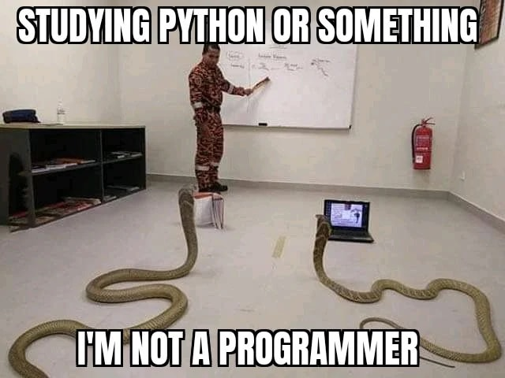
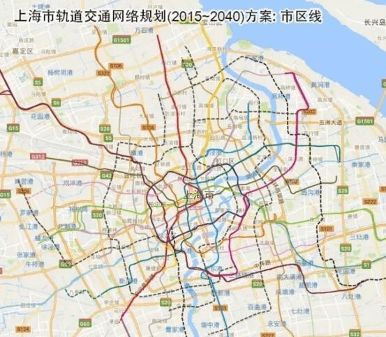
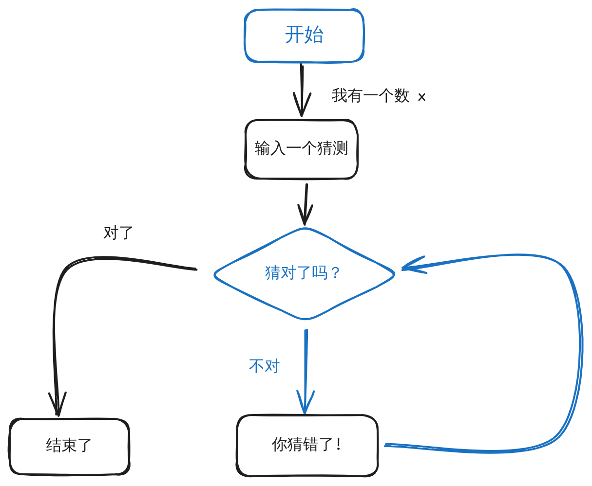

<div style="display: flex; justify-content: center; align-items: center; height: 100vh;"> <div style="text-align: center; padding: 40px; background-color: white; border: 2px solid rgb(0, 63, 163); border-radius: 20px; box-shadow: 0 0 20px rgba(0,0,0,0.1);"> <h1 style="font-size: 48px; font-weight: bold; margin-bottom: 20px; color: #333;">SI100+ 2024 Lecture 1</h1> <p style="font-size: 24px; color: #666;">编程语言和 Python 简介</p> <p style="font-size: 16px; color: #999; margin-top: 20px;">SI100+ 2024 Staff | 2024-08-22</p> </div> </div> <!--s--> <div class="middle center"> <div style="width: 100%"> # Part.1 课程介绍 </div> </div> <!--v--> ## 课程信息 **第一部分：认识编程语言和 Python** - 什么是编程语言，什么是 Python？~~Python n. 蟒蛇~~ - 我们在用的 VS Code 是什么，Python 代码是怎么运行的？ </br>  <div style="text-align: center;"> 实际上 Python 得名于 BBC 著名喜剧节目《Monty Python's Flying Circus》 </div> <!--v--> ## 课程信息 **第二部分：变量、运算符、表达式** - 变量，赋值，基本数据类型 - 整数，浮点数，字符串, etc. - 运算符，优先级，输入输出 - 布尔类型，逻辑运算 </br> ```python x = 123 # 合理 y = 456 # 很合理 x = y # 这好像不是我认识的数学 x = x + y # 这是不是说明 y = 0? ``` <!--v--> ## 课程信息 **第三部分：函数** - Python 的函数是数学意义的函数吗？ - 函数的定义，调用，参数传递，返回值，作用域 - 传入函数的函数 (High order function) - 函数与方法 <div style="display: flex; align-items: center; justify-content: center;">  <span style="display: inline-block; width: 28%; text-align: center;">$\Rightarrow$</span> <img src="images/shanghai_metro_topology.png" width="28%" style="margin-left: -100px;"> </div> <div style="text-align: center;"> 编程语言的函数，简化有相同逻辑的操作 </div> <!--v--> ## 课程信息 **第四部分：控制流** - `if` 语句，`if-else` 语句，etc. - 循环语句，`for`，`while`, `break` 与 `continue` - 循环与基础数据结构的结合 <div style="display: flex; align-items: center; justify-content: center;">  <span style="display: inline-block; width: 28%; text-align: center;">$\Rightarrow$</span> <div style="display: flex; align-items: center; justify-content: center; width: 40%; margin-left: -100px;"> ```python import random x = random.randint(1, 100) guess = int(input()) while guess != x: print("Try again!") guess = int(input()) print("Congratulations!") ``` </div> </div> <div style="text-align: center;"> 用更“正式”的方式描述你的逻辑 </div> <!--v--> ## 课程信息 **第五部分：Python 进阶** - 常用数据结构：列表 (`list`)，元组 (`tuple`)，字典 (`dict`)，集合 (`set`) - 模式匹配，打包， 条件表达式 (`p if cond else q`)，lambda 表达式 - 调试你的程序 - Zen of Python，PEP 8 代码规范 - 不要重复发明轮子：Python 的标准库 & 第三方库，包管理器，虚拟环境，阅读文档 <img src="images/thinking.png" width="40%" style="display: block; margin: 0 auto;"> <!--s--> <div class="middle center"> <div style="width: 100%"> # Part.2 什么是编程语言？ </div> </div> <!--v--> ## 计算机很棒，计算机很笨 - 除了 GPT 或其他 AI，没有办法让计算机直接按照我们说的话执行操作 凭什么不行？ - 自然语言不够严谨：我们吃食堂 `->` 我们吃食堂的饭（✅）我们把食堂吃掉（❌） - 计算机的硬件：大量的逻辑门，只能按照确定性的规则工作 该怎么办？ - 用没有歧义的方式描述我们的需求 - 扬长避短，计算机擅长大量、重复、明确的工作 <!--v--> ## 编程语言 > Computer Science is no more about computers than astronomy is about telescopes. -- Edsger W. Dijkstra - 编程语言是人与计算机沟通的桥梁 - 编程语言由人设计，有其自身的语法和语义 - 通过特定的工具，编程语言可以被转化为计算机能够直接运行的格式 - 除了使用编程语言，设计编程语言、让语言更易用/安全/适宜某种场景也是一个研究方向 - 想要了解更多？可以看看《计算机程序的构造和解释》（SICP） </br> 到底什么是编程：用特定的形式，把计算的步骤描述给计算机 <!--s--> <div class="middle center"> <div style="width: 100%"> # Part.3 Python </div> </div> <!--v--> ## Python 是什么？ Python 是一种通用的高级编程语言。 **我们能用 Python 做什么？** - 使用简洁的代码完成复杂的任务 - 跨平台运行 - 与其他语言交互 - 社区富有活力，语言本身 & 第三方库都在不断更新 - 调用多种库，实现图像处理（OpenCV），数据分析（Pandas），机器学习（PyTorch），网页开发（Django），etc. **听起来好厉害，有什么我们身边的例子吗？** - sympy，符号计算库，帮你应对大一高数/数分 - requests，获取网页信息，制作一个自动把课程表导入日历的小工具 - beautifulsoup，从网页中快捷地提取信息 ~~说不定你可以做一个抢课的脚本~~ <!--v--> ## 更加简洁的代码 机器码（Machine Code） ```txt [] 1139: 55 113a: 48 89 e5 113d: 48 83 ec 10 1141: c7 45 f8 01 00 00 00 1148: c7 45 fc 02 00 00 00 114f: 8b 55 f8 1152: 8b 45 fc 1155: 01 d0 1157: 89 c6 1159: 48 8d 05 a4 0e 00 00 1160: b8 00 00 00 00 1168: e8 c3 fe ff ff 116d: b8 00 00 00 00 1172: c9 1173: c3 ``` <!--v--> ## 更加简洁的代码 汇编代码（Assembly Code） ```asm [] main: push rbp mov rbp, rsp sub rsp, 16 mov DWORD PTR [rbp-4], 1 mov DWORD PTR [rbp-8], 2 mov edx, DWORD PTR [rbp-4] mov eax, DWORD PTR [rbp-8] add eax, edx mov esi, eax mov edi, OFFSET FLAT:.LC0 mov eax, 0 call printf mov eax, 0 leave ret ``` <!--v--> ## 更加简洁的代码 C 语言 ```c [] #include <stdio.h> int main() { int a = 1, b = 2; printf("%d\n", a+b); } ``` <!--v--> ## 更加简洁的代码 Python ```py [] a = 1 b = 2 print(a + b) ``` <div style="text-align: center;"> **Magic!** </div> <!--v--> ## 更加简洁的代码 为什么用了 Python，计算机就突然“理解” `print`, `a + b`, `a = 1` 都是什么意思了？ - Python 运行环境（Python 解释器，Python Interpreter） - 运行 Python 的，是一个 C 语言写的程序 - 在之前的环境配置中，我们安装的 Anaconda 就包含了这个运行 Python 的程序 （不是 VS Code！） - 计算机同样无法直接读懂 C 语言，但是编写解释器的 C 语言代码被一个叫做“编译器（Compiler）”的软件转化为了能直接在计算机上运行的格式 ```py print("This is the magic of Python!") ``` <!--v--> ## Python 基础语义 **执行顺序** ```py [] x = 123 y = 456 print(x + y) print("Hello, SI100+ 2024!") ``` 运行上面的代码，观察输出。 Python 的执行顺序是从上到下，逐行执行代码。 <!--v--> ## Python 基础语义 **`print` 语句** ```py print("Hello, SI100+ 2024!") ``` 总结“规律”，`print` 语句会把括号里的内容打印到屏幕上。 可以发现，Python 的语句也是根据某种“语法”组织的。 在中文里面，我们有这样的句子： 他 说 你好 （主语） （谓语） （宾语） Python 的这种 “单词” + “括号” + “括号里的内容” 的结构，是不是也有类似的规律？ 我们在“函数”部分会介绍这种模式的完整定义。 （非课程内容）更具体的规则参见：[Python 官方文档-函数调用表达式定义](https://docs.python.org/zh-cn/3/reference/expressions.html#calls) <!--v--> ## Python 基础语义 **形如 `x = y` 的语句** ```py x = 123 y = 456 ``` 借助前面的 `print` 语句来打印出我们需要的东西，我们可以得到在运行完 `x = 123` 之后，Python 认为 `x` 的含义是什么。 我 是 学生 （主语） （谓语） （宾语） 或者以英语语法的模式来讲，主语 + 系动词 + 表语。 即 `x = y`，是在告诉 Python，执行完这条语句之后，`x` 的值被认定为 `y`。 我们在“变量、运算符、表达式”部分会介绍这种模式的完整定义。 （非课程内容）更具体的规则参见：[Python 官方文档-赋值语句](https://docs.python.org/zh-cn/3/reference/simple_stmts.html#assignment-statements) <!--v--> ## Python 基础语义 **“我在初中就学过的数学”** $$ x = 2 \times 5 + 8 $$ ```py x = 2 * 5 + 8 ``` $$ y = 114 + 5^{14} $$ ```py y = 114 + 5 ** 14 ``` <!--v--> ## Python 基础语义 **组合语句** 自然语言的句子可以通过组合进行扩展。例如：“我是学生” `->` “我是 这所大学的 学生” Python 也可以进行类似的组合。我们可以把 ```py x = 123 ``` 扩展到 ```py x = 123 + 456 ``` 再扩展到 ```py x = 123 + 456 - (y * 5) ** 2 ``` 以此类推。 <!--s--> ## Takeaway Message - **计算机的世界里面没有魔法！** - 编程语言是人与计算机沟通的桥梁 - 编程语言有其自身的语法和语义，编程就是组合你需要的“意义” - 你的电脑上有一套软件，可以让你的 Python 代码能被计算机理解 - Python 基础语义 <!--s--> <div style="display: flex; justify-content: center; align-items: center; height: 100vh; "> <div style="text-align: center; padding: 40px; background-color: white; border-radius: 20px; box-shadow: 0 0 20px rgba(0,0,0,0.1);"> <div style="display: inline-block; padding: 20px 40px; border-radius: 10 px; margin-bottom: 20px;"> <h1 style="font-size: 48px; font-weight: bold; margin: 0; color: rgb(16, 33, 89)">Thanks for Listening</h1> </div> <p style="font-size: 24px; color: #666; margin: 0;">Any questions?</p> </div> </div>